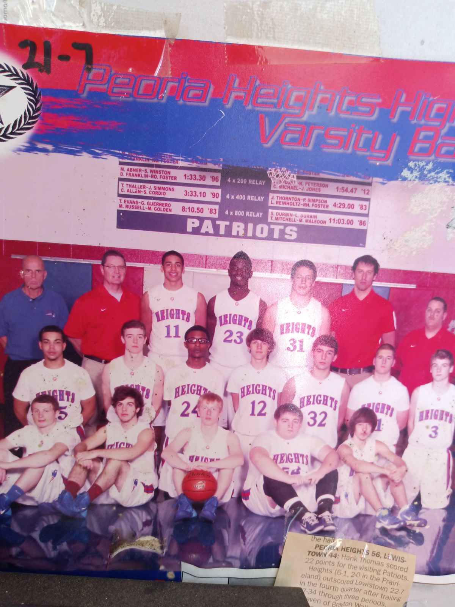

Coach Persich with the 2015 boys varsity team in Peoria Heights.

Coach Persich during a game with his Peoria Heights team.

Coach Persich had the highest free throw percentage with Illinois Central College in 1976.

He coached his daughter back in 2016.

He coached his son in 2015.

The Peoria Mayor bestowed this proclimation to Mike back in 1999.

Coach Persich was awarded the Neve Harms award back in 2002.

His coaching times at Peoria Heights. He is the coach with the most regional champs in Peoria Heights history.

His team won sectional champs back in 2010.